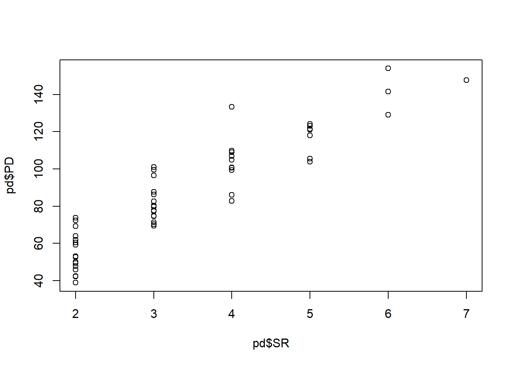
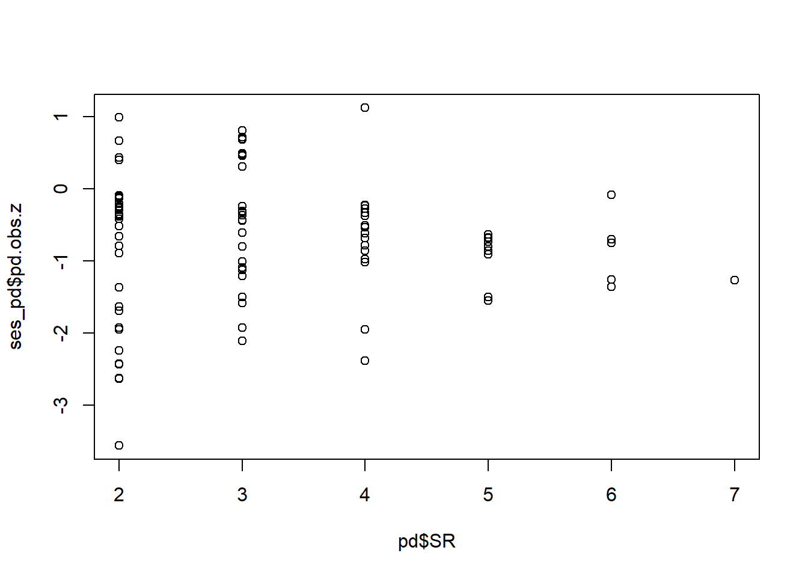
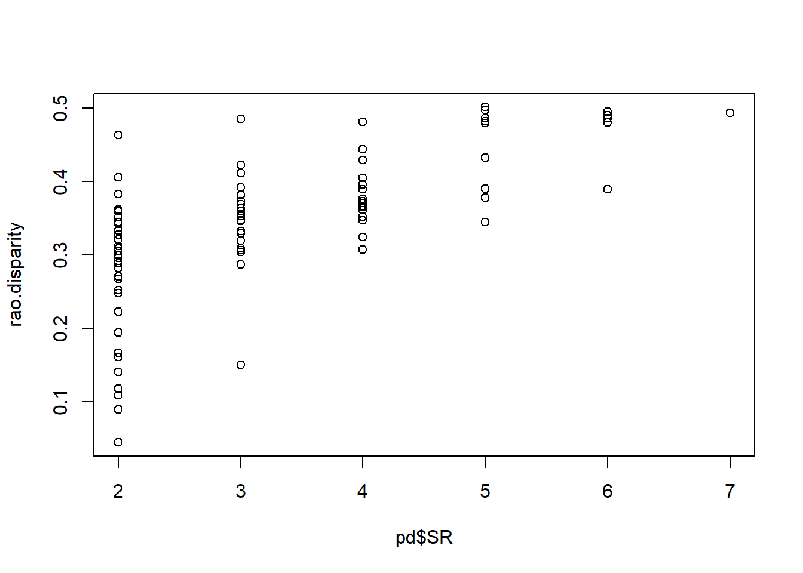
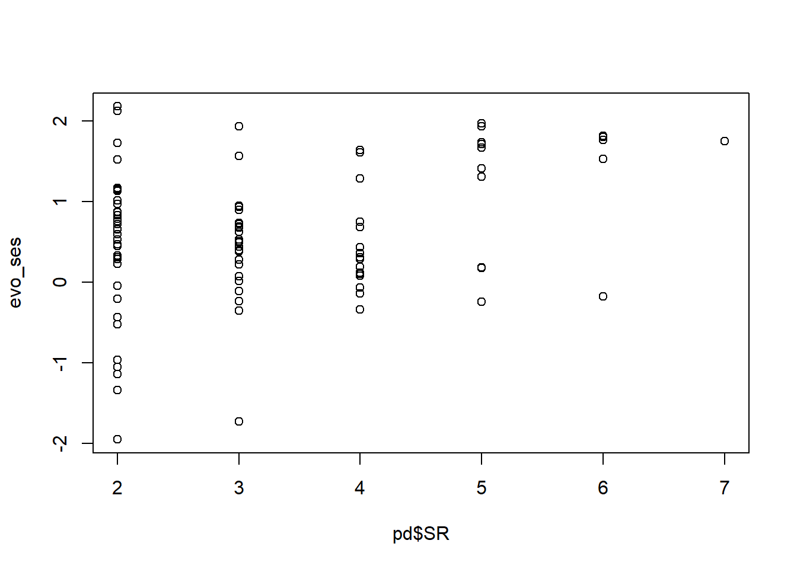
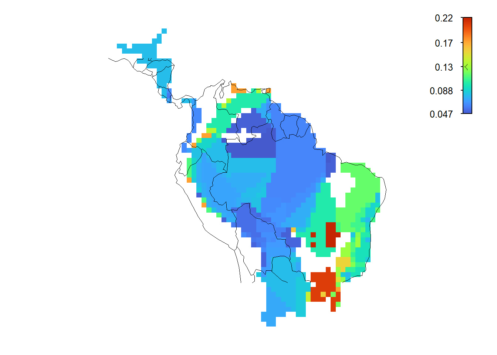
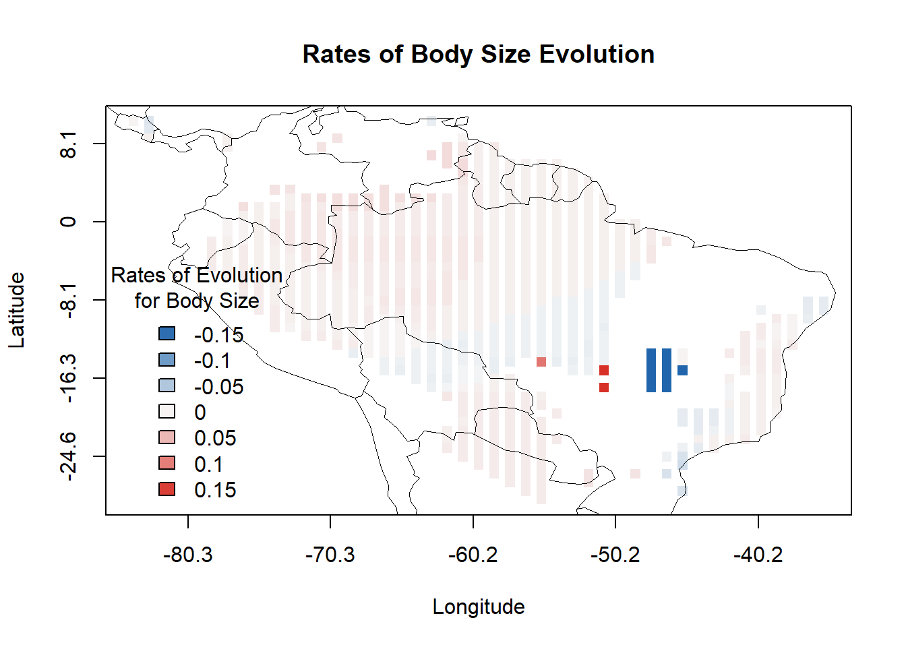

Em estudos macroecológicos, é raro ter dados de ocorrência geográfica, dados de características e dados filogenéticos para a exata mesma amostra de espécies. Vamos cruzar os dados para o menor conjunto de dados.
# Cruzar dados filogenéticos com características/geografiamatch <-treedata(phylogeny, morphology)
Warning in treedata(phylogeny, morphology): The following tips were not found in 'data' and were dropped from 'phy':
Agalychnis_hulli
Agalychnis_moreletii
Agalychnis_terranova
Aplastodiscus_leucopygius
Boana_crepitans
Bokermannohyla_hylax
Callimedusa_baltea
Callimedusa_ecuatoriana
Corythomantis_greeningi
Cruziohyla_calcarifer
Cruziohyla_craspedopus
Cruziohyla_sylviae
Dendropsophus_nanus
Duellmanohyla_rufioculis
Hyloscirtus_armatus
Itapotihyla_langsdorffii
Litoria_freycineti
Litoria_inermis
Litoria_meiriana
Litoria_rubella
Nesorohyla_kanaima
Nyctimantis_brunoi
Nyctimantis_siemersi
Nyctimystes_foricula
Nyctimystes_infrafrenatus
Nyctimystes_kubori
Nyctimystes_narinosus
Nyctimystes_pulcher
Osteocephalus_leprieurii
Phyllomedusa_neildi
Phyllomedusa_venusta
Ptychohyla_euthysanota
Ranoidea_alboguttata
Ranoidea_aurea
Ranoidea_australis
Ranoidea_brevipes
Ranoidea_caerulea
Ranoidea_dayi
Ranoidea_genimaculata
Ranoidea_lesueurii
Ranoidea_maini
Ranoidea_manya
Ranoidea_nannotis
Rheohyla_miotympanum
Scinax_catharinae
Sphaenorhynchus_dorisae
Tepuihyla_rodriguezi
Trachycephalus_mesophaeus
Warning in treedata(phylogeny, morphology): The following tips were not found in 'phy' and were dropped from 'data':
Agalychnis_taylori
Phasmahyla_timbo
phylogeny <- match$phymorphology <- match$data# Cruzar dados de características e geografiacommon_species_names <-intersect(colnames(occurrence.spp), rownames(morphology))# Filtrar matriz de ocorrênciaocc_filtered <- occurrence.spp |> dplyr::select(all_of(common_species_names))# Filtrar matriz de característicastraits_filtered <- morphology[common_species_names, ]# Checando e garantindo ordenação consistente, cortando locais com 0 presenças# Aproveitando a estrutura syncsa para cortar as coords tambémorg <-organize.syncsa(comm=occ_filtered, traits=traits_filtered, envir=coords)
Warning: Communities removed from community data - Check list of warning in
list.warning
Para análises de diversidade, a diversidade é necessária. Locais com 0 espécies tornarão impossível o cálculo de algumas das métricas pretendidas. Mesmo locais com poucas espécies podem às vezes retornar valores estranhos. Vamos resolver isso filtrando locais com menos de 2 espécies.
species_counts_per_site <-rowSums(occurrence.spp)sites_to_retain_logical <- species_counts_per_site >=2sites_to_retain_names <-names(species_counts_per_site[sites_to_retain_logical])# Filtrar occurrence.sppoccurrence.spp <- occurrence.spp[sites_to_retain_names, , drop =FALSE]# Filtrar coordscoords <- coords[sites_to_retain_names, , drop =FALSE]# Checar as novas dimensõesdim(occurrence.spp)
[1] 714 47
dim(coords)
[1] 714 2
Se esse procedimento removeu espécies (espécies com 0 presenças), precisamos garantir a consistência no conjunto de dados de morfologia e filogenia novamente.
# Checando e garantindo ordenação consistente, cortando locais e espécies com 0 presençasorg <-organize.syncsa(comm=occurrence.spp, traits=morphology, envir=coords)
Warning: Species removed from community data - Check list of warning in
list.warning
occurrence.spp <- org$communitycoords <- org$environmentalmorphology <- org$traits# Cruzar dados filogenéticos com características/geografiamatch <-treedata(phylogeny, morphology)
Warning in treedata(phylogeny, morphology): The following tips were not found in 'data' and were dropped from 'phy':
Agalychnis_dacnicolor
Phyllomedusa_iheringii
phylogeny <- match$phymorphology <- match$data# Checar dimensões e ordenação novamentedim(occurrence.spp)
A métrica de diversidade filogenética mais comum é a PD de Faith (1992), a soma dos comprimentos dos ramos da árvore conectando todas as espécies dentro de cada local.
Note que a PD é fortemente correlacionada com a riqueza de espécies.
plot(pd$PD ~ pd$SR)

cor(pd$PD, pd$SR)
[1] 0.9726692
Um número de randomizações (modelos nulos) permite criar tamanhos de efeito padronizados (SES - Standardized Effect Sizes) para padronizar para riquezas desiguais entre os locais. O modelo nulo taxa.labels embaralha os rótulos das pontas da árvore.
ses_pd <-ses.pd(occurrence.spp, phylogeny,null.model="taxa.labels", runs=99) # aumente os runs na prática# Correlação entre SES_PD e riquezaplot(ses_pd$pd.obs.z ~ pd$SR)

cor(ses_pd$pd.obs.z, pd$SR)
[1] -0.2067741
Outra métrica de diversidade comum é a Distância Filogenética (pareada) Média (MPD - Mean Phylogenetic Distance) de espécies dentro de cada local. Esta métrica também tem seu equivalente para diversidade funcional/fenotípica.
Quanto maior o valor, mais distantemente relacionadas estão as espécies em um local. Quanto menor o valor, mais proximamente relacionadas as espécies estão no local.
Podemos facilmente mapear cada métrica de diversidade filogenética. Mapear a PD.
Muitas métricas podem capturar a variação/diversidade de fenótipos em cada local. Uma comum é a entropia quadrática de Rao (Rao 1982), que é calculada somando as distâncias quadráticas entre cada par de espécies em uma assembleia, multiplicadas por 1/n (Botta-Dukát 2005), semelhante aos índices de disparidade comuns usados em morfometria e paleontologia. Para matrizes de incidência (ou seja, sem abundâncias, como no nosso caso), a entropia de Rao torna-se equivalente às médias das distâncias (fenotípicas) pareadas, o que a torna diretamente comparável às distâncias filogenéticas médias (MPD) vistas acima.
# Vamos usar o bodysize, mas você também pode usar dados multivariadosbodysize <- morphology[,1]disparity <-rao.diversity(occurrence.spp, traits=as.data.frame(bodysize))rao.disparity <- disparity$FunRao
Assim como nas métricas de diversidade filogenética, as métricas de diversidade fenotípica geralmente se correlacionam positivamente com a riqueza de espécies.
plot(rao.disparity ~ pd$SR)
cor(rao.disparity, pd$SR)
[1] 0.7294276
Comumente, estamos interessados em descobrir regiões geográficas com disparidade maior/menor do que a prevista apenas pela riqueza. Modelos nulos podem ser úteis para controlar a disparidade relacionada à riqueza de espécies (veja Maestri et al. 2022). No entanto, tais modelos nulos baseados em randomização ignoram a evolução fenotípica, ou seja, consideram uma “árvore estrela”, com sinal filogenético zero. Isto é biologicamente irreal, já que sabemos que espécies intimamente relacionadas tendem a se parecer. Nós propusemos um modelo nulo informado evolutivamente para corrigir esse problema e gerar tamanhos de efeito padronizados (SES) evolutivamente realistas (Maestri et al. 2022). O modelo consiste em simular N vezes uma característica sobre a filogenia, dado um modelo neutro evolutivo (o modelo de Movimento Browniano), calculando a disparidade geográfica de tal característica, e depois comparando a disparidade empírica com a disparidade simulada para gerar o SES.
Vamos calcular o SES informado evolutivamente. “À mão” primeiro, depois com uma função.
# Ajustar movimento Browniano para recuperar os valores dos parâmetrossimul_param_BM <-fitContinuous(phy=phylogeny, dat=bodysize, model="BM")# Simulando características usando um modelo de Movimento Brownianosimul_BM <-mvSIM(tree = phylogeny,nsim =100, # número de simulaçõesmodel ="BM1",param =list(sigma = simul_param_BM$opt$sigsq,theta = simul_param_BM$opt$z0))# Calculando a disparidade de Rao para cada característica simuladaFunRao_results <-sapply(1:ncol(simul_BM), function(i) {rao.diversity(occurrence.spp, traits =as.data.frame(simul_BM[, i]))$FunRao})mean_simul_disparity <-rowMeans(FunRao_results)sd_simul_disparity <-apply(FunRao_results, 1, sd)evo_ses <- ((rao.disparity - mean_simul_disparity) / sd_simul_disparity)
Compare as duas disparidades com a riqueza de espécies.
# Disparidade bruta e riquezaplot(pd$SR, rao.disparity)

# Removendo efeito da riqueza com evo_sesplot(pd$SR, evo_ses)

36.4 Diversidade beta filogenética
Lembre-se de que já vimos uma maneira de medir a diversidade beta filogenética como gradientes no Exercício 2. Agora usaremos uma abordagem diferente: a média absoluta da diversidade beta de cada célula em comparação com seus vizinhos mais próximos. Usaremos a estrutura de Baselga (2012) e Leprieur et al. (2012) para decompor a diversidade beta filogenética em turnover e aninhamento (nestedness).
Warning in spdep::dnearneigh(gridCentroids, d1 = 0, d2 = radius): neighbour
object has 5 sub-graphs
gridcell neighborhoods: median 8, range 1 - 8 cells
Mapear o turnover filogenético e o aninhamento.
plot(phylobd_turnover)plot(phylobd_nestedness)
36.5 Taxas de diversificação
Por fim, podemos estimar taxas de diversificação/especiação nas pontas da árvore (baseadas nos terminais), como a métrica DR (Jetz et al. 2012).
mDR <-gridMetrics(grid.spp, metric="DR")
...dropping species that are not in phylo data...
...calculating phylo metric: DR...
plot(mDR)

36.6 Taxas de evolução das características
Também podemos calcular taxas nas pontas para a evolução da característica, usando o pacote RRphylo.
# Calcular taxas nas pontas da evolução do tamanho corporalbodysize_rates <-RRphylo(tree=phylogeny, y=bodysize)bs_rates <- bodysize_rates$rates # taxa de evolução da característica por ramo# Podar apenas taxas por espécie (excluir ramos ancestrais)org_rates <-organize.syncsa(comm=occurrence.spp, traits=as.data.frame(bs_rates))bs_rates <- org_rates$traits# Média por localtmatrix_rates <-matrix.t(occurrence.spp, bs_rates, scale=FALSE)mean_rates <- tmatrix_rates$matrix.T
Mapear taxas de evolução do tamanho corporal.
map_grid(coords[,1], coords[,2], mean_rates[,1], worldmap = epm:::worldmap,xlab ="Longitude", ylab ="Latitude",legend_title ="Rates of Evolution\nfor Body Size",main ="Rates of Body Size Evolution")

36.7 Desafio 3
Use seus próprios dados para realizar suas análises preferidas deste exercício.